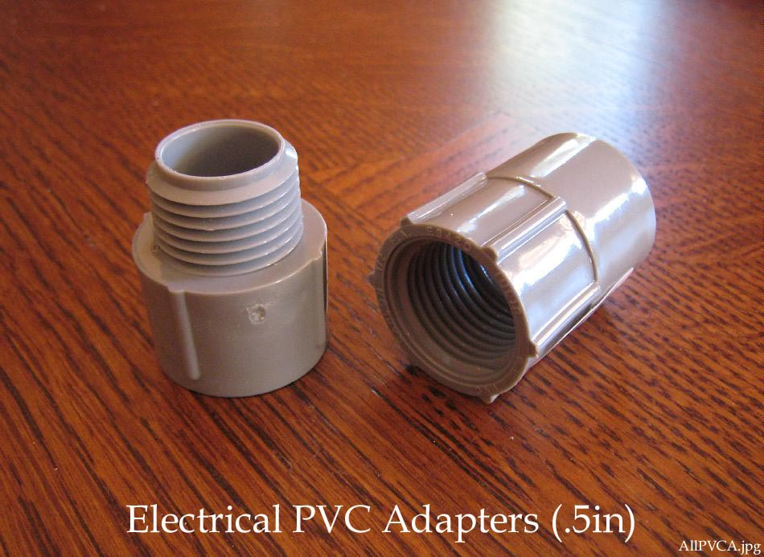

| PVC Sponsons ( page 2 of 5) | Menu Previous Page Next Page |
|

The flange that connects the air hose to the PVC sponsons is comprised of two 1/2" PVC adapters available for 25 cents each at many hardware stores such as Lowe's and Home Depot. These are electrical, not plumbing adapters. Most homemade float bags use a flap of skin heat sealed or glued around the air hose to sponson connection. A TPU ( PVC / Urethane) elbow flange is most commonly seen on commercial sponsons.
|
|